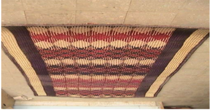
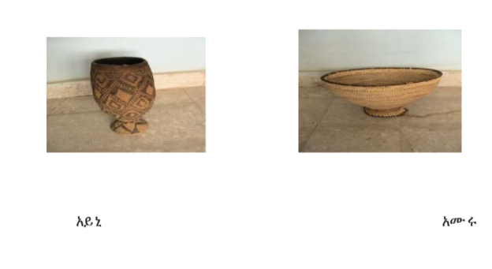
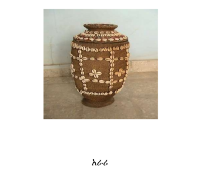
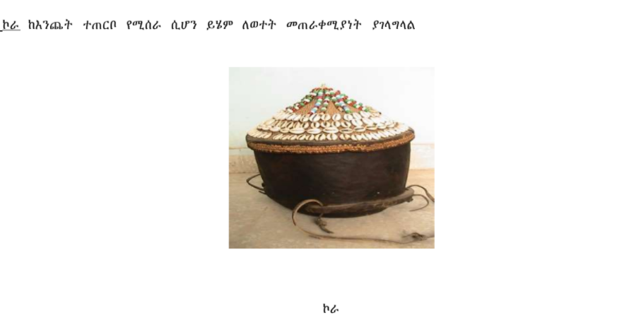
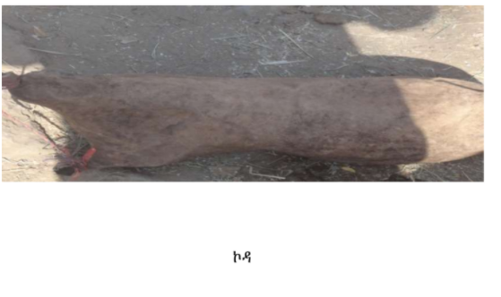
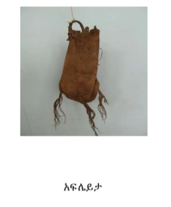
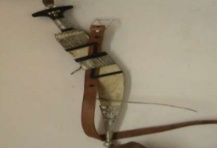
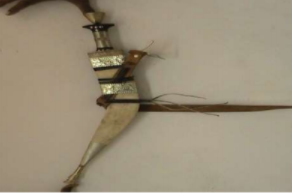

የአፋር ባህላዊ አልባሳትና ጌጣ ጌጦች:
የአፋር ህዝብ የራሱ የሆኔ ባህላዊ አልባሳትና ጌጣጌጦች ያሉት ሲሆን ከወረቅ፤ ከብር፤ ከነሀስ፤ ከመዳብ ፤ከዛጎልና ከስንድድ ጌጣጌጦችን በመስራት ራሱን ያስውባል፡፡
እነዚህ ጌጣጌጥ በራስ ፣በጆሮ ፣በጣት ፣በክንድ በእግር ላይ ያደርጋሉ፡፡
ሀ. ባህላዊ አልባሳት
-ኡቡኬ፤- የሴት ልብስ ሲሆን ከወገብ በታች እንደ ጉርድ የሚታጠቁት ልብስ አይነት ሲሆን ዝርግ ነው
-መስነፋ፤-የወንድ ልብስ ሲሆን እንደ ሽርጥ የሚታጠቁት ዝርግና ነጭ ከለር ያለው የልብስ አይነት ነው
-ረራይቶ፤-የወንድ ልብስ ሲሆን በትካሻ ላይ የሚደረግ ነጠላ ልብስ ነው
ለ. ጌጣጌጦች
ፌራንቶ፡-/ferranto/:- ቀለበት የእጅ ጌጥ
አልቦ፡- የሴቶች የእግር ጌጥ
በጊ አሩሙ፡- ከቆዳ የተሠራ ሴቶች በወገብ ላይ የሚታጠቁት ቀበቶ ነው፡፤
ሀሌይታ፡- የሴቶች መቀነት ነው
አግቢ ከቤላ፡-
የሴቶች ጫማ
ኪርዶ ፡- የሴቶች አግር ጌጥ
ሀረይ ቢርታ ፡- የወንዶች የእጅ ጌጥ
ሶኮይታ፡- የወንዶች የእጅ ጌጥ ›
ሃራይ ረጋድ ፡- የህፃናት የእጅ ጌጥ
ሶፎኑ ፡- የህፃናት አንገት ጌጥ፤ከቆዳ የተሠራ ሆኖ ጫፎቹ በስንድድ ያተዋበ ነው፡፡
6
ከላይ ከተጠቀሱት በተጨማሪ ወንዶች ጊሌ ፣ጩቤ በመታጠቅ ጠመንጃ ና ዱላ በመያዝ ራሣቸውን ያሰውባሉ ፀጉራቸውን ወንዶች ለማስወብ የሚጠቀሙት
ከእንጨት የተሠራች ለስላሣ ቀጭን ማበጠሪያነች እርሷም ፊሌይና ትባላለች ወንዶች ለውበት ያስጌጡት ፀጉራቸው እንዳይበላሽ እንዳይተጣጠፍ ፀጉሩ የያዘው ቅባት
እንደታበሳ ከእንጨት የተሠራ ትራስ ብርኩማ /ፊዴና ይጠቀማሉ ፡፡
ክፍል ሶስት
ባህላዊ የእደ ጥበብ ውጤቶች
የአፋር ሴቶች በእጃቸው ከተለያዩ ነገሮች ከቆዳ፣ከኡንጋ የተለያዩ የቤት ውስጥ መገልገያ ቁሳቁሶችን ይሰራሉ፣ ኡንጋን /ዘምባባን/ የተለያዩ ቀለማት
በመንከር፣በማቅለም ለስፌት ያዘጋጁታል፣ መገልገያ ቁሳቁሶች ወብና ያማሩ እንዲሆኑ / ማድረግ ኡንጋ/ ከማማቅለማቸውም ሌላ የቆዳ ነት /ለስላሳ ቆዳ/
የተለያዩ መልክ ያላቸው ስንድዶችና ዛጎሎችን በመጠቀም ያጌጡና ማራኪ ያደረጓቸውል፡፤
ሙዴይና እና መካሮ የተባሉ መስፊያዎችን ለማያያዥነት ይጠቀማሉ እንጅ ሁሉም የስፌት እቃዎች ሲዘጋጁ በእጅ እንጂ ሌላ መሳሪያ አይጠቀሙም
፣የአሠራራቸው ትውፈታዊ የእደ ጥበብ እውቀትና ክህሎት ሲወርድ ሲዋረድ ቤተሰብ ቤተሰብን /እናት ልጇን/በማስተማር የመጣ የእወቀት ጥበብ
ነው፡፡
በአሁኑ ጊዜ ይህ ባህላዊ የእደ ጥበብ የእወቀትና ክህሎት ዘርፍ ሴቶች በማህር እየተደራጁ በተለያዩ ከተሞች ምርታቸውን እያቀረቡ ነው፡
፤በመሆኑም የአፋር ብህረሰብ የሚ ጠ ቀሙ ባቸው ዋና ዋና ባህላዊ የወ ግ እቃዎችን አይ ነታቸው እንደ የ አገልግሎታ ቸው ከዚህ በታች እናስተዋው ቃለን ፡፡
1.ለምንጣፍና ምኝታ የሚያገለግል ቁሳቁሶች
ወሉ /wallu/- ለመኝታ ወይንም ለምንጣፍ የሚገልግል ከከብት ቆዳ የተሰራ ነው፡፡
ሰላት ፊዶ፤- ከኡንጋ ለመስገጃ አገልግሎት የተሠራ
ዲቦራ ፡- ከኡንጋ የተሰራ ለግመል መጫኛ የሚያገልግል ግመሉ በሚጫንበት ወቅት
ወገቡን ጭነቱ እንዳልጠው መከላከያ መደልድል /ዳውላ/ነው፡፡
ፊዲማ ፡- አገልግ ሎቱ ለመ ሬት ምንጣፍ የሚ ው ል ሲሆን የሚ ሰራውም ከሰሌን /ኡንጋ/ ነው ፡፡ ሰሌኑ ቀለም ሳይ ነከርና እንዲሁም ቀለም ተ ነክሮ ለም ንጣፍ
ው በት ሊሰጥ በሚ ችል መ ልኩ የተለያዩ ቅርጽ በማው ጣ ት ይ ሰራል ፡፡

የአፋር የወተት ዕቃዎች
አፋር ብሄረሰብ የወተት መጠቀሚያ /ማለቢያና መጠጫ/ እቃዎች የተሠሩት ከእንጨት ፣ከኡንጋ ስፌት ከቆዳ ሲሆን ውበት እንዲኖራቸው ያማሩና
ያሸበረቁ ለማድረግ ለፋ ቆዳ /ነት ቀለም/ ያልተነከረ የተለያዩ መልክ ያላቸው ስንድዶችና ዛጎሎች ይጠቀማሉ፡፡
ሀ. አይኒ ፤ለከብቶች ማለቢያ የሚጠቀሙበት -
ለ . አሙር ለግመል ማለቢያ የሚጠቀሙበት

አራሪ፡- የታለበው የከብቶች ወተት ማጠራቀሚያ ከስፌት የሚሰሩ


ኮዳ /ወተት መናጫ /፤-
ይህ የወተት መናጫ / ቅቤ ማውጫ / እቃ የሚሰራው ከትንሽ የፍየል ግልገል / በከል / ቆዳ ነው ፡፡የግልገሉ ቆዳ በወተት ፤ በአሬራና ከላይ በተጠቀሱት ቅጠላ
ቅጠል ቅመሞች በውሀ ተዘፍዝፎ መሬት ውስጥ ለተወሰነ ጊዜ ይቀበራል ፡፡ የቆዳው ጸጉር ይነጫል፤ በቆዳው ላ የቀረው ስጋ ይነጫል ፤ በሁለቱም በኩል በውስጥም
በውጭም ይነጫል ፤ይፋቃል በመቀጠልም በእጅም ሆነ በእግር ማልፋት ነው ፡፡
ወተቱን ቁጭ ብለው ፤ ቆመው መናጥ ሲችሉ ስራም እየሰሩ እየተንቀሳቀሱና መንገድ እየሄዱ ወተቱን ይንጣሉ፡፡

የውሀ መጠራቀሚያ መገልገያዎች
የውሃ ማቀዝቀዣና መያዣ /
ይህ የውሀ መያዣና ማቀዝቀዣ ከትንሽ ፍየል ግልገል ( በከል ) ቆዳ ተለፍቶ የተሰራ ነው፡፡ ብዙውን ግዜ ውሀ ለማቀዝቀዝ ሲጠቀሙበት ረጅም
መንገድ ሲጓዙ ለው መያዣነት ይጠቀሙበታል ፤ ረጅም መንገድ ሲጓዙ በብትራቸው / በዘንጋቸው / ጫፍ አንጠልጥለው ነፋስ እያስመቱት ስለሚጓዙ
ውሀው በፍጥነት ይቀዘቅዛል፤ በቤት / አሪ/ አካባቢም ከፍ/ ረዘም/ ካለ ቦታ ላይ ስለሚያስቀምጡት ውሀው በፍጥነት ይቀዘቅዛል፡፡
ቆዳው ውሀ ሳይጨመርበት ሲቀር ይደርቃል ይሁን እንጂ በመቆርፈድ አያበላሽም፤ምክንያቱም መጀመሪያ የተለያዩ እጽዋቶች ቅጠላ ቅጠልን
በመቀመም ተዘፍዝፎ ስለተዘጋጀ ነው ፡፡አንድ ጊዜ ቆዳው ከተዘጋጀ በኋላ ከመታጠብ በስተቀር ሌላ እንክብካቤ አይደረግለትም፡፡
1 ሣር / የውሀ መቅጃ /
ይህ የውሀ መቅጃና መያዣ ከትልቅ ፍየል ቆዳ የሚዘጋጅ ነው ፡፡ሴቶች በጀርባቸው ተሸክመው ከወንዝ ፤ከኤላ፤ወ .ዘ.ተ ውሀ የሚቀዱበት ሲሆን
አህያ ወይም ግመል ላይ በመጫንም ሊቀዱበት ይችላሉ ፡፡ውሀ የመቅዳት ስራ የሴቶች የስራ ድርሻ ንው፡፡
ሀ.አፍ ሌይታ፡ -ራቅ ብ ለው ሲጓዙ ደግሞ እንደ ኮዳ የሚጠቀሙበ ት የው ሃ መያዣ ከበ ግና ፍ የል ግልገል ቆዳ የወጣ /ስልቻ/ ነው ፡፡

አፍሌይታና ሣር/ውሃ ማያዣ/ለመስራት የሚጠቀሙባቸው ቅጠላ ቅጠሎች ፡-
1. ራዓይሻ
2. ደባካን
3. ሣሣካ
4. ኣዳን ገሊ
እነዚህ ቅጠላ ቅጠሎች በአንድነት ተወቅጠው ለትንሽጊዜ ውሀ ጨምሮ በመዘፍዘፍ ማልፋት ነው ፡፤የቅጠላ ቅጠሎቹ ቅመም በውሀ መቅጃው
በውጪም በውስጥም ነፍሳት / ባክቴሪያ ወ.ዘ.ተ / ምንግዜም እንዳይፈጥሩ ያደርጋል ፡፡ እንዲሁም ቆዳው በመቆርፈድ ተቀዶ እንዳይበላሽ ያለሰልሰዋል
፤ የውሀው ጣዕም እንዳይቀየር ፤ እንዳይበላሽ የማድረግ ባህሪ አለው ፡፡
የስለት እቃዎች
ከብረት የሚሰሩ የተለያዩ አይነት የስለት እቃዎች ሲኖሩ በተለያም ለብሄረሰቡ እንደ ጦር መሳሪያ ባህላዊ ጌጥና ገመልንና የቀንድ ከብቶችን
ለማረድ የሚጠቀሙበት ጊሌ /ሰይፍ / በሚል መጠሪያ ይታወቃል፡፡ ይህም እንደየ አጠቃቀሙ ይለያያል፡፡
ሀ. ላክኦ ጊሌ በመባል የሚታወቀው ከጠንካራ ብረት የተሰራና ቅርጹ ከጉራዴና ከሰይፍ ለየት ያለ መሀሉ ሰፋ ጎበጥ ብሎ በሁለቱም ጎን ስለት
ያለው ጫፉ ሹል ሲሆን እጀታው ከእንጨት የተሰራ ሆኖ ከብር የተሰራ ጌጣጌጥ ይለብሳል፡፡

ላክኦ ጊሌ
የስለት እቃዎች
ታጎሪታ፡ በመባል የሚታወቀው ከጠንካራ ብረት የተሰራና ቅርጹ ከጉራዴና ከሰይፍ ለየት ያለ መሀሉ ሰፋ ጎበጥ ብሎ በሁለቱም ጎን ስለት ያለው
ጫፉ ሹል ሲሆን እጀታው ከእንጨት የተሰራ ሆኖ ሽቦ የተሰራ ጌጣጌጥ ይለብሳል፡ ፡

ታጎሪታ